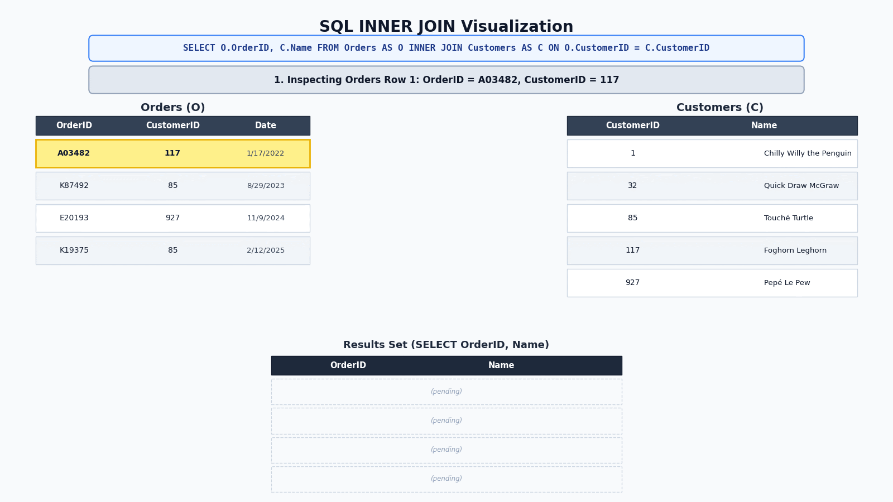

Merging Data with SQL JOINs#
Introduction: The Need for Multi-Table Databases#
In earlier chapters, you learned how to retrieve columns (SELECT), filter records (WHERE), compute calculated fields (transformations and functions), and arrange output (ORDER BY). Up to this point, however, every query operated on a single database table.
In accounting, financial data is almost never stored in a single giant table. Consider an e-commerce enterprise like Amazon or a distributor like Northwind Traders. Throughout a given fiscal year, the company collects extensive information across multiple areas:
Customer Profiles: Company names, contact persons, billing/shipping addresses, and tax identifiers.
Order Headers: Order dates, required ship dates, freight costs, and shipping carriers.
Line-Item Transactions: Specific products purchased, quantities ordered, unit selling prices, and line-item discounts.
Inventory & Supplier Catalog: Product descriptions, unit costs, reorder thresholds, and supplier contact details.
Personnel Records: Sales rep identifiers, job titles, commission tiers, and manager reporting lines.
Why Giant Single-Table Spreadsheets Fail#
Inexperienced analysts often ask: “Why not store all of this information in one massive spreadsheet or database table with hundreds of columns?”
Attempting to store all enterprise data in a single table creates severe data failures and introduces significant risks:
Data Duplication & Error Risk: Storing a customer’s full company name, billing address, and contact info on every single order row duplicates data thousands of times. If the customer updates their mailing address, an accountant would have to update thousands of historical records. Missing even one row creates conflicting records (e.g.,
'100 Main St'vs.'100 Main Street').Storage Inefficiency & Wasted Memory: Repetitive text strings consume massive amounts of disk storage and memory, slowing query performance across the enterprise.
Inability to Represent Valid Business Scenarios: Suppose an order can contain anywhere from 1 to 100 items. If a single table were designed with 100 sets of product columns to accommodate the maximum possible order size, an order containing only 1 item would leave 99 sets of columns empty (
NULL).Data Integrity Failures: In a single flat table, it is impossible to record a new customer before they place their first order, or to record a new product before it is sold, without creating incomplete rows filled with blank attributes.
The Solution: Relational Normalization#
To prevent these failures, relational databases are designed so that each piece of information is stored once and only once.
Table Name |
Primary Responsibility |
Key Identifier (Primary Key) |
|---|---|---|
|
Stores customer identity and address details once. |
|
|
Stores order header facts (date, freight, ship city). |
|
|
Stores staff directory and HR information. |
|
|
Stores item descriptions, unit prices, and stock levels. |
|
Databases designed with this property (store each piece of information only once) guarantee data integrity and eliminate redundancy on disk. However, analysts who work with such databases face a burden. When an analyst needs to generate a report displaying order dates alongside customer company names and employee sales reps, he will need to merge data from multiple tables.
The Fundamentals of SQL Merging (INNER JOIN)#
In SQL, merging data across tables is accomplished using the JOIN clause. Merging does not modify underlying tables on disk; rather, it dynamically matches rows from two or more tables based on a shared key column and combines their columns into a single temporary result set.
INNER JOIN Syntax and Structure#
The standard syntax for merging two tables in SQL is:
SELECT A.Column1, B.Column2, ...
FROM TableA AS A
INNER JOIN TableB AS B
ON A.SharedKey = B.SharedKey
To understand how SQL evaluates a JOIN, keep these fundamental mechanics in mind:
The “Left” vs. “Right” Table: The table specified in the
FROMclause is designated as the left table. The table specified in theINNER JOINclause is designated as the right table.The
ONLink Condition: TheONclause tells SQL how to connect the two tables. It specifies that a row from the left table should be merged with a row from the right table only when their values in the designated key column are equal.Table Aliases (
AS): To keep code clean and readable, accountants assign short aliases to table names in theFROMandJOINclauses (e.g.,Orders AS OandCustomers AS C).Column Qualification: If a column name exists in both tables (such as
CustomerID), you must qualify the column name using its table prefix (e.g.,C.CustomerIDorO.CustomerID). Qualifying column names eliminates ambiguity and prevents database execution errors.
Introductory Example: Matching Orders to Customer Names#
Consider a reporting request from Northwind Traders. The sales manager wants a list of all recent orders showing the OrderID, OrderDate, and the customer’s official CompanyName (rather than an opaque code like LAUGB).
In the database, OrderID and OrderDate reside in the Orders table, while CompanyName resides in the Customers table. Both tables share the CustomerID column as their linking bridge:
SELECT
O.OrderID,
O.OrderDate,
C.CompanyName
FROM Orders AS O
INNER JOIN Customers AS C
ON O.CustomerID = C.CustomerID
WHERE O.CustomerID IN ('CENTC', 'LAUGB')
Query Results:
OrderID |
OrderDate |
CompanyName |
|---|---|---|
10259 |
1996-07-18 |
Centro comercial Moctezuma |
10495 |
1997-04-03 |
Laughing Bacchus Wine Cellars |
10620 |
1997-08-05 |
Laughing Bacchus Wine Cellars |
10810 |
1998-01-01 |
Laughing Bacchus Wine Cellars |
How SQL Executed This Query:
SQL scanned the left table (
Orders) for rows matching theWHEREfilter.For each order row from step 1, SQL extracted the
CustomerIDandOrderDate.For each order row from step 1, SQL searched the right table (
Customers) for all rows where the CustomerIDs matched in the left and right tables.For every row that matched, SQL merged the customer row with the order row, outputting
OrderID,OrderDate, and the looked-upCompanyName.
This execution method is illustrated in the following animated graphic.


Fig. 11 Data Merging Animation#
How Many Rows Will the Output Contain?#
When merging tables, the total number of rows returned in your query output depends on the relationship between the two tables.
1. One-to-Many Relationships & The Row Multiplication Rule#
In business databases, the vast majority of table relationships are one-to-many (1:N).
Example: One customer can place many orders, but each individual order belongs to exactly one customer.
Example: One supplier can supply many products, but each product is supplied by exactly one supplier.
When merging tables across a one-to-many relationship, you must understand the row multiplication rule:
The Row Multiplication Rule
When one row in the left table matches N rows in the right table, the left row is duplicated N times in the query output, once for each matching right row.
In our previous query result, notice that customer 'LAUGB' (Laughing Bacchus Wine Cellars) appears three times in the output table because that customer placed three distinct orders (OrderIDs 10495, 10620, and 10810). The customer’s address and company name were stored only once on disk in the Customers table, but SQL dynamically multiplied the customer information across all three matching order rows in memory.
2. One-to-One Relationships & Specialized Table Design#
A one-to-one (1:1) relationship exists when a single record in Table A links to at most one matching record in Table B.
While less common than one-to-many relationships, one-to-one table splits are used strategically in enterprise database design for two important reasons:
Avoiding Sparse
NULLValues: Suppose Northwind Traders offers an optional customer rewards program. If 80% of customers choose not to enroll, adding loyalty fields (RewardsID,Points,Status) directly to the mainCustomerstable would leave 80% of those columns blank (NULL). Creating a separateRewardstable keeps the primaryCustomerstable compact and free of empty cells.Security & Role-Based Access Control: Sensitive attributes (such as employee SSNs, salary tiers, or customer credit ratings) can be isolated in a separate 1-to-1 table with strict database access permissions, while general contact details remain accessible to logistics staff.
-- Merging Customers with an optional 1-to-1 Rewards table
SELECT
C.CustomerID,
C.CompanyName,
R.RewardsID,
R.Points,
R.Status
FROM Customers AS C
INNER JOIN Rewards AS R
ON C.CustomerID = R.CustomerID
Row Behavior in 1-to-1 Joins: Because each customer has at most one matching record in the Rewards table, row multiplication does not occur. Every row in the left table appears at most once in the query output.
Handling Unmatched Data: INNER JOIN vs. LEFT JOIN#
So far, we have focused on INNER JOIN. However, understanding the distinction between an inner join and a left join is one of the most vital concepts in financial auditing and data analytics.
Why Records Can Disappear in an INNER JOIN#
An INNER JOIN is strict: it returns only rows where the ON condition finds an exact match in both tables. If a row in the left table has no matching record in the right table (or vice versa), that record is completely excluded from the query output.
Suppose Northwind Traders has prospective or inactive customers in the Customers table who have never placed an order (e.g., CustomerID 'PARIS', Paris spécialités).
If an auditor writes an INNER JOIN between Customers and Orders:
SELECT C.CustomerID, C.CompanyName, O.OrderID, O.OrderDate
FROM Customers AS C
INNER JOIN Orders AS O
ON C.CustomerID = O.CustomerID
WHERE C.CustomerID IN ('LAUGB', 'PARIS')
Query Results:
CustomerID |
CompanyName |
OrderID |
OrderDate |
|---|---|---|---|
LAUGB |
Laughing Bacchus Wine Cellars |
10495 |
1997-04-03 |
LAUGB |
Laughing Bacchus Wine Cellars |
10620 |
1997-08-05 |
LAUGB |
Laughing Bacchus Wine Cellars |
10810 |
1998-01-01 |
Notice that CustomerID 'PARIS' completely vanished from the report! Because 'PARIS' has zero entries in the Orders table, the INNER JOIN dropped the customer entirely.
Preserving All Records with LEFT JOIN#
What if a marketing manager or auditor wants a report listing all registered customers, regardless of whether they have placed an order?
To preserve every record from the primary table, use a LEFT JOIN.
A LEFT JOIN guarantees that every single row from the left table (FROM) appears in the final output:
If a left-table row matches right-table records, SQL merges the data normally.
If a left-table row has no matching right-table records, SQL still retains the left-table row and fills all right-table columns with
NULL.
SELECT C.CustomerID, C.CompanyName, O.OrderID, O.OrderDate
FROM Customers AS C
LEFT JOIN Orders AS O
ON C.CustomerID = O.CustomerID
WHERE C.CustomerID IN ('LAUGB', 'PARIS')
Query Results:
CustomerID |
CompanyName |
OrderID |
OrderDate |
|---|---|---|---|
LAUGB |
Laughing Bacchus Wine Cellars |
10495 |
1997-04-03 |
LAUGB |
Laughing Bacchus Wine Cellars |
10620 |
1997-08-05 |
LAUGB |
Laughing Bacchus Wine Cellars |
10810 |
1998-01-01 |
PARIS |
Paris spécialités |
|
|
Forensic Audit Application: Detecting Anomalies with LEFT JOIN#
Because LEFT JOIN populates missing right-table attributes with NULL, auditors can combine a LEFT JOIN with WHERE Column IS NULL to instantly surface inactive accounts, unassigned assets, or control violations.
Audit Question: Which registered customers in our database have NEVER placed an order?
SELECT
C.CustomerID,
C.CompanyName,
C.Phone
FROM Customers AS C
LEFT JOIN Orders AS O
ON C.CustomerID = O.CustomerID
WHERE O.OrderID IS NULL
Output: Returns a clean list of inactive customer accounts (FISSA, PARIS, etc.) whose order count is zero.
Warning
Checking for NULL
In SQL Server, NULL represents a missing or unknown value rather than a specific number or text string.
The standard and recommended way to check for NULL in SQL Server, especially in WHERE clauses, is by using the IS NULL or IS NOT NULL predicates.
You should never use standard comparison operators (=, !=, <, >) to check for NULL because a comparison with NULL always results in UNKNOWN.[1]
Summary Comparison: When Do INNER and LEFT Joins Behave Identically?#
Scenario |
Do |
Explanation |
|---|---|---|
Merging |
YES |
Every valid order must be assigned to a customer (enforced by referential integrity constraints). Because zero orphan orders exist, no right-side |
Merging |
NO |
Inactive or prospective customers exist who have zero orders. |
Merging |
YES |
Every order in the system was processed by an active employee sales rep. |
Merging More Than Two Tables (Chaining JOIN Clauses)#
In enterprise analytics, answering complex business questions frequently requires merging data from three or more related tables in a single query. Merging more than two tables is called “chaining”.
The Chaining Mechanism#
To merge additional tables, simply add successive JOIN and ON clauses below your initial FROM statement. SQL evaluates chained joins sequentially, building up the composite result set step-by-step.
SELECT
O.OrderID,
O.OrderDate,
C.CompanyName AS CustomerName,
E.LastName AS SalesRep
FROM Orders AS O
INNER JOIN Customers AS C
ON O.CustomerID = C.CustomerID
INNER JOIN Employees AS E
ON O.EmployeeID = E.EmployeeID
Detailed Accounting Example: Reconstructing Line-Item Sales#
Consider an audit request: Generate a line-item sales schedule showing OrderID, OrderDate, CompanyName, ProductName, UnitPrice, and Quantity.
To produce this report, SQL must chain across four separate tables:
Orders AS O(holdsOrderDate)Customers AS C(holdsCompanyName, linked viaCustomerID)OrderDetails AS OD(holdsUnitPriceandQuantity, linked viaOrderID)Products AS P(holdsProductName, linked viaProductID)
SELECT TOP (10)
O.OrderID,
O.OrderDate,
C.CompanyName,
P.ProductName,
OD.UnitPrice,
OD.Quantity,
OD.UnitPrice * OD.Quantity AS GrossLineTotal
FROM Orders AS O
INNER JOIN Customers AS C
ON O.CustomerID = C.CustomerID
INNER JOIN OrderDetails AS OD
ON O.OrderID = OD.OrderID
INNER JOIN Products AS P
ON OD.ProductID = P.ProductID
ORDER BY O.OrderID ASC
Takeaway: By chaining four tables through three INNER JOIN clauses, an auditor extracts a completely reconstructed general ledger schedule from raw facts stored across separate database tables.
Summary and Clause Execution Checklist#
Merging data using JOIN clauses is a cornerstone of querying relational databases. It allows accounting systems to enforce the concept that each piece of information should be stored only once, while enabling analysts to construct dynamic, multi-table financial schedules on demand.
Key Chapter Takeaways#
Normalization vs. Reporting: Relational databases split data across specialized tables to eliminate redundancy and protect data integrity (“Store facts once”).
JOINclauses merge those tables back together during query execution.INNER JOINvs.LEFT JOIN:INNER JOINreturns only matching rows present in both tables.LEFT JOINreturns all rows from the left table, filling unmatched right-table fields withNULL.
The Row Multiplication Rule: In one-to-many relationships, a parent row duplicates N times in the output if it matches N child records. In one-to-one relationships, row multiplication does not occur.
Detecting Control Anomalies: Combining
LEFT JOINwithWHERE RightKey IS NULLis an essential auditing technique for identifying unassigned records, inactive accounts, or orphan transactions.Chaining
JOINClauses: You can merge any number of tables in a single SQL query by appending sequentialJOIN ... ONstatements.
Complete SQL Clause Execution Sequence#
As you begin to write more complicated SQL queries, remember that the clauses MUST be written in a strict order. JOIN clauses are placed immediately after the FROM statement:
SELECT TOP (n) ColumnList
FROM LeftTable AS A
[INNER | LEFT] JOIN RightTable AS B
ON A.SharedKey = B.SharedKey
WHERE FilterCondition(s)
ORDER BY SortColumn(s) [ASC | DESC]
Clause |
Purpose |
Required or Optional? |
Position in Query |
|---|---|---|---|
|
Specifies columns or transformed expressions to retrieve. |
Required |
1st Clause |
|
Limits output to the top n rows or percentage. |
Optional |
Placed immediately after |
|
Identifies the primary (left) source table. |
Required |
2nd Clause |
|
Merges secondary (right) tables based on matching key conditions. |
Optional |
Placed immediately after |
|
Filters individual rows before aggregation or display. |
Optional |
Placed after |
|
Sorts the resulting output rows. |
Optional |
Final Clause |
Notes#
[1] https://learn.microsoft.com/en-us/sql/t-sql/queries/is-null-transact-sql?view=sql-server-ver17